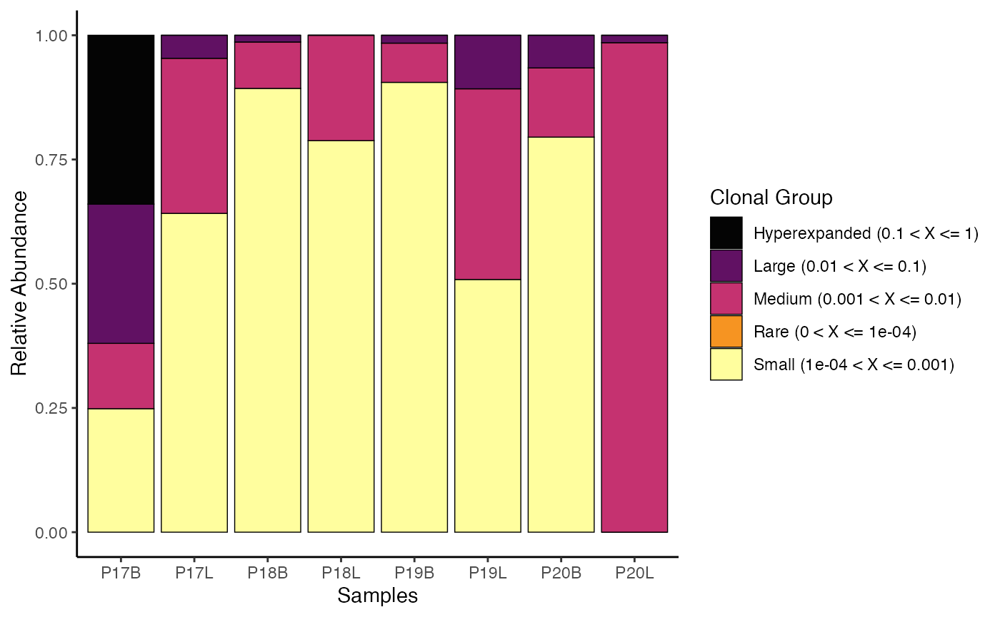
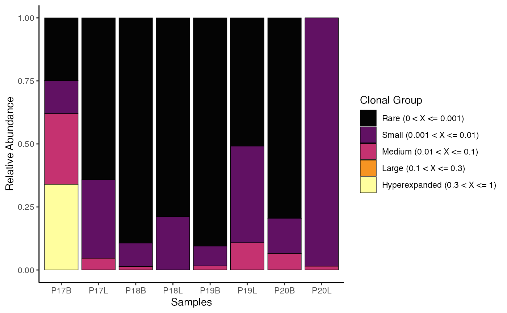
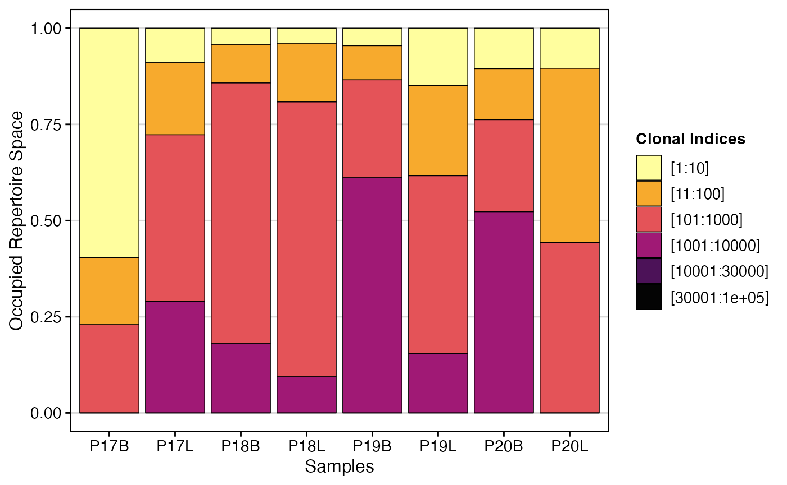
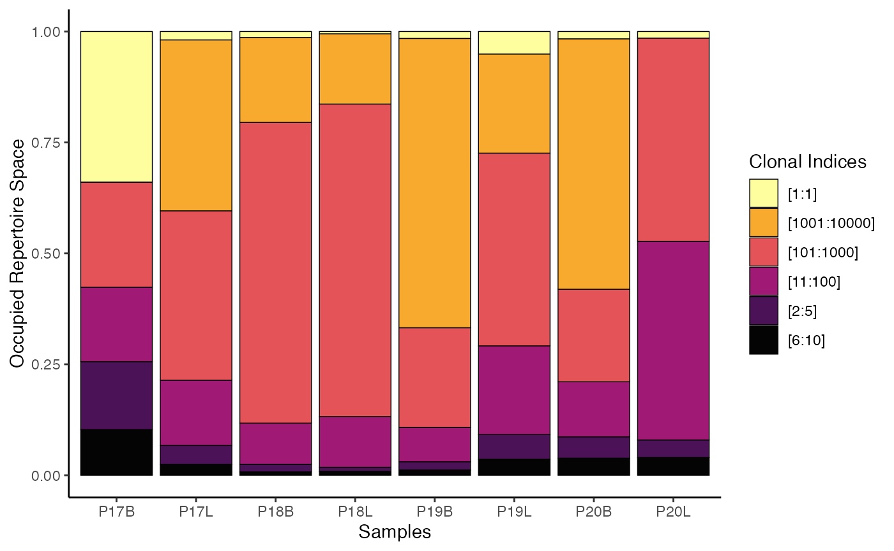

Visualizing Clonal Dynamics
Compiled: April 03, 2026
Source:vignettes/articles/Clonal_Dynamics.Rmd
Clonal_Dynamics.RmdclonalHomeostasis: Examining Clonal Space
By examining the clonal space, we effectively look at the relative
space occupied by clones at specific proportions. Another way to think
about this would be to consider the total immune receptor sequencing run
as a measuring cup. In this cup, we will fill liquids of different
viscosity—or different numbers of clonal proportions. Clonal space
homeostasis asks what percentage of the cup is filled by clones in
distinct proportions (or liquids of different viscosity, to extend the
analogy). The proportional cut points are set under the
cloneSize variable in the function and can be adjusted.
Default cloneSize Bins
- Rare: 0 to 0.0001
- Small: 0.0001 to 0.001
- Medium: 0.001 to 0.01
- Large: 0.01 to 0.1
- Hyperexpanded: 0.1 to 1
To visualize clonal homeostasis using gene clone calls with default
cloneSize bins:
clonalHomeostasis(combined.TCR,
cloneCall = "gene")
We can reassign the proportional cut points for
cloneSize, which can drastically alter the visualization
and analysis
clonalHomeostasis(combined.TCR,
cloneCall = "gene",
cloneSize = c(Rare = 0.001, Small = 0.01, Medium = 0.1,
Large = 0.3, Hyperexpanded = 1))
In addition, we can use the group.by parameter to look
at the relative proportion of clones between groups, such as by tissue
type. First, ensure the “Type” variable is added to
combined.TCR:
combined.TCR <- addVariable(combined.TCR,
variable.name = "Type",
variables = rep(c("B", "L"), 4))Now, visualize clonal homeostasis grouped by “Type”:
clonalHomeostasis(combined.TCR,
group.by = "Type",
cloneCall = "gene")
clonalHomeostasis() provides an assessment of how
different “sizes” of clones (based on their proportional abundance)
contribute to the overall repertoire. This visualization helps to
identify shifts in repertoire structure, such as expansion of large
clones in response to infection or contraction in chronic conditions,
offering insights into immune system activity and health.
clonalProportion: Examining Space Occupied by Ranks of Clones
Like clonal space homeostasis, clonalProportion() also
categorizes clones into separate bins. The key difference is that
instead of looking at the relative proportion of the clone to the total,
clonalProportion() ranks the clones by their total count or
frequency of occurrence and then places them into predefined bins.
The clonalSplit parameter represents the ranking of
clonotypes. For example, 1:10 refers to the top 10 clonotypes in each
sample. The default bins are set under the clonalSplit
variable and can be adjusted.
Default clonalSplit Bins
- 10 (top 1-10 clones)
- 100: (top 11-100 clones)
- 1000: (top 101-1000 clones)
- 10000: (top 1001-10000 clones)
- 30000: (top 10001-30000 clones)
- 100000: (top 30001-100000 clones)
To visualize the clonal proportion using gene clone
calls with default clonalSplit bins:
clonalProportion(combined.TCR,
cloneCall = "gene") 
To visualize clonal proportion using nt (nucleotide)
clone calls with custom clonalSplit bins:
clonalProportion(combined.TCR,
cloneCall = "nt",
clonalSplit = c(1, 5, 10, 100, 1000, 10000)) 
clonalProportion() complements
clonalHomeostasis() by providing a perspective on how the
“richest” (most abundant) clones contribute to the overall repertoire
space. By segmenting clones into rank-based bins, it helps identify
whether a few highly expanded clones or a larger number of moderately
expanded clones dominate the immune response, offering distinct insights
into repertoire structure and dynamics.
Next Steps
- Comparing Clonal Diversity and Overlap - Diversity indices, rarefaction curves, and repertoire overlap.
- Basic Clonal Visualizations - Clonal abundance, length distributions, and scatter plots.
- Visualizations for Single-Cell Objects - Overlay clonal data on UMAP/tSNE embeddings.